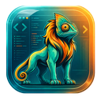
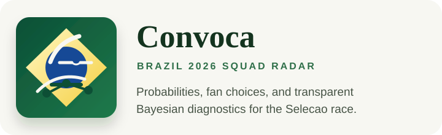

Projects
Small products, built to answer a clear question.
Independent work in developer experience and applied statistical modelling.

Developer tooling
Camaleone
Adaptive VS Code and Cursor theming that makes local and remote coding contexts easier to distinguish.
Open project
Applied modelling
Convoca
A public Brazil 2026 squad forecast combining Bayesian rankings, eligibility signals and model diagnostics in one decision interface.
Open project